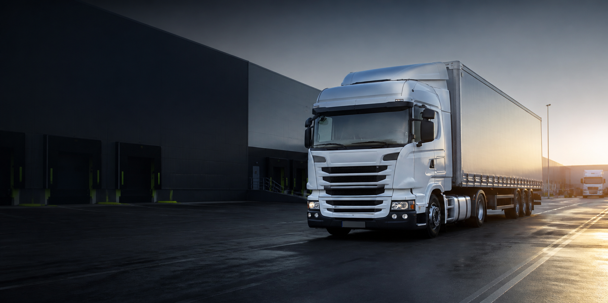

Transport FTL
Pełne ładunki krajowe i międzynarodowe z bieżącym statusem oraz ETA.
- naczepy standard i mega
- trasy Polska–UE
- potwierdzenie POD

TRANSPORT KRAJOWY I MIĘDZYNARODOWY
Jeden proces łączy klienta, dyspozytora, kierowcę i księgowość. Aktualny status, przewidywany czas dostawy, dokumenty oraz koszty są dostępne bez szukania po wiadomościach.
01 / USŁUGI
Zakres demonstracyjny pokazuje, jak można przedstawić ofertę przewoźnika i od razu połączyć ją z cyfrową obsługą zlecenia.
Pełne ładunki krajowe i międzynarodowe z bieżącym statusem oraz ETA.
Ładunki częściowe planowane wspólnie, aby ograniczyć puste kilometry i koszt.
Szybkie zlecenia z priorytetem, potwierdzonym kierowcą i kontrolą terminowości.
02 / CYFROWY OBIEG ZLECENIA
Każdy etap ma osobę odpowiedzialną, wymagane dane i warunek zakończenia. Klient widzi tylko własny transport.
Trasa, termin, ładunek i wymagania trafiają do jednego formularza.
Stawka, paliwo, opłaty drogowe, marża i ważność oferty.
Akceptacja klienta, numer zlecenia i komplet danych.
Pojazd, kierowca, okna czasowe i optymalna trasa.
Dokumenty, ilość, masa, zdjęcia i czas wyjazdu.
ETA, postoje, alerty i informacja o odchyleniach.
Rozładunek, podpis odbiorcy i dokument POD.
CMR, zlecenie, koszty i komplet do faktury.
Faktura, rentowność trasy i wynik w KPI.
03 / CONTROL TOWER
Zaplecze pokazuje transporty wymagające reakcji, obciążenie floty, brakujące dokumenty i rentowność. Kierowca aktualizuje etapy, a klient otrzymuje czytelny status.
RF-184 · opóźnienie +42 minSPRAWDŹ
RF-179 · brak POD po dostawieUZUPEŁNIJ
04 / KPI I DECYZJE
Dane są przykładowe. W prawdziwym wdrożeniu zakres wskaźników dobiera się do sposobu rozliczania i rzeczywistych źródeł danych firmy.
REALIZACJA KONCEPCYJNA
Stronę, proces, formularze i panel dopasowuje się do realnej floty, dokumentów oraz sposobu pracy przewoźnika.